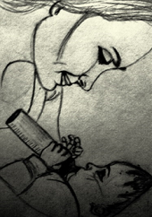

Творческое объединение
"Открытый университет"
Мероприятия
АКВАРЕЛЬ МОЕЙ ЛЮБВИ:
АЛГОРИТМЫ, ТЕХНИКИ И ПРИЕМЫ ПСИХОЛОГИЧЕСКОГО КОНСУЛЬТИРОВАНИЯ, КОРРЕКЦИИ И ТЕРАПИИ ОТНОШЕНИЙ
ПРИВЯЗАННОСТИ И ИНТИМНОСТИ
АССОЦИАТИВНЫЕ КАРТЫ В КОНСУЛЬТИРОВАНИИ, КОРРЕКЦИИ И ТЕРАПИИ ОТНОШЕНИЙ ПРИВЯЗАННОСТИ И ИНТИМНОСТИ: АЛГОРИТМЫ, ТЕХНИКИ И ПРИЕМЫ
АВТОР-РАЗРАБОТЧИК ПРОГРАММЫ ТРЕНИНГА И ВЕДУЩАЯ:
ВЕНСКО Ольга Иосифовна, магистр психологических наук, ученый-исследователь в области инженерной психологии, психологии труда и эргономики, старший преподаватель кафедры возрастной и педагогической психологии Гродненского государственного университета имени Янки Купалы, модератор психологических событий в Гродно и регионе, председатель экспертной комиссии сертифицированных программ Гродненского областного общественного объединения практических психологов (ГОООПП), Действительный член Общероссийской профессиональной психотерапевтической лиги (Москва), региональный менеджер программ и тренер Тренингового центра «Сталкер» (Витебск), возрастной психолог, профориентолог, эргонолог, организационный психолог Гродненского филиала РУП «Белпочта»; системный семейный психотерапевт, системный расстановщик, консультант по вопросам сексуальности и женской самоидентичности, кризисный психолог, травмотерапевт, арт-терапевт, мастер метафорической психотерапии.
Контактные линии:
Контактный телефон: +375 29 2857057
E-mail: PlanetaSchastia@mail.ru
E-mail: Venska-life@mail.ru
www.psycholog.p.ht/index.php
SKYPE: VENSKA-PSY
SKYPE: Olga_Venska
Офис 1: 230025, г. Гродно, ул. К. Маркса, 29-412
Офис-2: 230025, г. Гродно, ул. Б. Троицкая, 46 (1 этаж)
АННОТАЦИЯ ТРЕНИНГА
У каждой Истории Любви несколько авторов: Он, Она, Бог и Обстоятельства Жизни….
Но Полотно Любви всегда одно. Каждый Творец, непревзойденный Художник этой неповторимой Картины сам (осознанно либо нет) выбирает средства и технику создания Шедевра Чувственности.
И процесс, и результат этого творчества определен самобытностью каждого из Авторов Полотна Любви: какими маслами и красками авторы его распишут, таким оно и будет…
Как создать отношения нежно пастельных оттенков, как преобразовать трогательную чувственность в огненную страстность двух пламенных темпераментов, как вовремя заметить угасание чувственности, как избежать жестоких штрихов, искажающих близость в паре на Вашем Полотне Любви – все это в авторской программе Ольги Венско «Акварель моей Любви».
Автор и ведущая тренинга - системный семейный психотерапевт, системный расстановщик, консультант по вопросам сексуальности и женской самоидентичности, консультант восстановительного подхода в работе с парами, мастер метафорической психотерапии.
Общая продолжительность тренинга: 6 часов.
Направление работы в тренинге, методы и технические приемы в программе: системная семейная психотерапия, метафорическая психотерапия и арт-терапия, символдрама, мандала, ассоциативные карты.
Основные вопросы, раскрывающиеся в программе тренинга: типы психологической привязанности; понятие интимности, сексуальности и психосексуального развития; трехкомпонентная модель изучения чувства любви; функциональная и онтогенетическая модели развития любви; искажения и нарушения чувства любви; ревность как нарушение комфорта пары и проявление деструктивности интимных отношений; техники коррекции и терапии отношений привязанности и интимности.
ДИЗАЙН ПРОГРАММЫ ТРЕНИНГА
10.00 – 11.00
Приветствие участников тренинга. Введение в тему тренинга.
Привязанность, интимность, любовь: определение понятий; типы психологической привязанности; страх потери объекта привязанности.
11.00 -13.00
Понятие интимности. Любовь как вершина человеческой интимности.
Трехкомпонентная модель и возможности изучения чувства любви.
Развитие любви как чувства. Функциональная модель развития любви. Онтогенетическая модель развития любви.
Искажения и нарушения чувства любви. Невротические стратегии отношения к миру. Понятие о невротической любви. Виды отклонений в любви.
Ревность как проявление деструктивности интимных отношений. Определения и характеристики ревности. Ревность и зависть – сходства и различия. Реакции и виды ревности. Специфика ревности мужчин и женщин.
14.00 -17.30
Психокоррекция ревности и страха утраты привязанности. Техники и алгоритмы работы с ассоциативными картами.
Краткий обзор используемых наборов ассоциативных карт. Рекомендации по работе с ассоциативными картами. Техники применения ассоциативных карт в психокоррекции отношений привязанности и интимности. Экспресс-анализ отношений. Мандала. Схема взаимодействия. Алгоритм выбора способа разрешения конфликта.
17.30-18.00
Завершение программы:
Рефлексия участников тренинга.
Групповой шеллинг. Обратная связь участников и тренера по работе в программе.
Закрытие группы.
Для работы с отношениями:
Мы в отношениях
Трансформация реальности
Работа с Тенью
Лицом к лицу
Беру и отдаю
Треугольник любви (на основе модели Р. Стернберга)
Треугольник сострадания
Ожидания и ресурсы
Смыслы конфликтных отношений
Управление конфликтом в отношениях
Дом, похожий на меня
Дом наших отношений
Город наших отношений
Алгоритмы психокоррекционной работы с использованием ассоциативных карт
Алгоритм «Я-реформирования» (психокоррекция «Я-образа»)
Алгоритм работы с балансом «привязанность – сепарация»
Алгоритм реформирования интроекта
ЖИЗНЬ ПОСЛЕ ИЗМЕНЫ:
КАК ВОССТАНОВИТЬ ДОВЕРИЕ И ВДОХНОВИТЬ НА ЧЕСТНОСТЬ

Статистика - это наука, и она неумолима. После неверности одного из
супругов:
- 19% пар разводятся сразу
- 75% пар разводятся в течение 18-24 месяцев
Почему такие страшные цифры?!
Большинство супругов продолжали любить друг друга, но было нечто, что привело к печальному концу их брак.
Основные причины заключаются в том, что:
- обманутый супруг не может простить и избавиться от страха, что это может повторится
снова
- сбившийся с пути супруг не может продемонстрировать свою надежность.
В результате доверие не восстанавливается, а без него все равно, что жизнь без воздуха.
А сколько прошло времени в вашем случае? Какие шансы вы даете своему браку?
Если ваши отношения восстанавливаются очень тяжело, с периодическим состоянием «опускания рук», то знайте, это не ваша вина. Просто вас никто не научил, как это делать правильно и более эффективно.
Успех выживших пар после измены – результат не случайности, а регулярно применяемых стратегий и действий, которые помогали преодолеть сомнения, нечестность, недоверие и другие отголоски необдуманных поступков одного из супругов.
АВТОР-РАЗРАБОТЧИК ПРОГРАММЫ ТРЕНИНГА И ВЕДУЩАЯ:
ВЕНСКО Ольга Иосифовна, магистр психологических наук, ученый-исследователь в области инженерной психологии, психологии труда и эргономики, старший преподаватель кафедры возрастной и педагогической психологии Гродненского государственного университета имени Янки Купалы, модератор психологических событий в Гродно и регионе, председатель экспертной комиссии сертифицированных программ Гродненского областного общественного объединения практических психологов (ГОООПП), Действительный член Общероссийской профессиональной психотерапевтической лиги (Москва), региональный менеджер программ и тренер Тренингового центра «Сталкер» (Витебск), возрастной психолог, профориентолог, эргонолог, организационный психолог Гродненского филиала РУП «Белпочта»; системный семейный психотерапевт, системный расстановщик, консультант по вопросам сексуальности и женской самоидентичности, кризисный психолог, травмотерапевт, арт-терапевт, мастер метафорической психотерапии.
Контактные линии:
Контактный телефон: +375 29 2857057
E-mail: PlanetaSchastia@mail.ru
E-mail: Venska-life@mail.ru
www.psycholog.p.ht/index.php
SKYPE: VENSKA-PSY
SKYPE: Olga_Venska
Офис 1: 230025, г. Гродно, ул. К. Маркса, 29-412
Офис-2: 230025, г. Гродно, ул. Б. Троицкая, 46 (1 этаж)
ПРОГРАММА ТРЕНИНГА:
12 эффективных действий для укрепления доверия (чем больше делаете, тем больше пунктов доверия восстанавливаете)
Как избавиться от ложного мышления и прекратить путать обман с правдой
Как развить большую честность в себе и вдохновить на честность партнера
Как устранить 5 самых главных препятствий, которые блокируют процесс восстановление доверия
Как превратить обещание в доверие-восстановительное действие
Как найти самого главного монстра и нейтрализовать его навсегда
Самый эффективный и самый быстрый способ для восстановления доверия «3 уровня прозрачности»
Личные примеры и опыт клиентов
ИНДИКАТОРЫ ВОССТАНОВИТЕЛЬНОЙ ТЕХНОЛОГИИ
Уверенность в себе, в своем партнере, в ваших отношениях.
Знать конкретные инструменты и методы, необходимые для создания отношений, в которых будут отсутствовать такие вещи, как обман, подозрения и скрытность.
Обладание такими стратегиями, которые день за днем позволят доверию между вами расти и увеличиваться.
Смелость и мужество принимать риски, которые минимизируются в ходе восстановления доверия.
Свободное, открытое и честное общение с партнером.
Ощущение контроля над собственной судьбой, а не зависимость от навязчивых мыслей о прошлом.
Умение всегда быть свободным от страха будущего.
Готовность отпустить навсегда все, что блокирует и ограничивает доверие – и наслаждаться честными, открытыми отношениями, которые придают вашей семье силы и двигают вас вперед.
Способность просыпаться каждый день уравновешенным, позитивно настроенным, в приподнятом настроении – в ожидании, что наступающий день принесет успех.
Для многих пар этот тренинг стал настоящей находкой!
И возможно в эту минуту они делают то, что позволяет доверию расти и крепнуть, а
любовь между ними расцветает,
как сад после суровой зимы.
И у вас есть такая возможность. Приходите.
Будем работать над отношениями вместе.

Уникальность этого тренинга состоит в том, что вы получите 12 проверенных временем
конкретных действий, которые позволят:
- обманутому партнеру набраться смелости и рискнуть довериться снова
- а для второго партнера, эти действия позволят продемонстрировать свою надежность.
Автор-разработчик и ведущая тренинга: Ольга Венско, семейный психолог, консультант по вопросам преодоления неверности, сертифицированный системный семейный психотерапевт, сексолог.

СТРУКТУРА ТРЕНИНГА:
10.00 – 11.00
Введение в тренинг. Вводная часть. Феномен «измена» как индикатор состояния текущих отношений.
11.00. – 13.00
Работа с системой отношений: любовь – близость –угасание чувственности - холодность - уход из отношений – измена – вина и стыд – отчаяние, раскаяние, расплата – восстановительная технология.
Работа с обидой.
Работа с принятием.
14.00 – 17.30
Технологии восстановительного подхода в работе с парой:
- Как создать отношения, где любовь, доверие и
сексуальное
счастье никогда не прекращают расти и увеличиваться
- Как спроектировать ваши отношения так, чтобы они
соответствовали вашим желаниям и настолько полно, что ни один из вас не
ощутит
потребности выйти за пределы вашей семьи
- Как бороться со скукой и другими негативными эмоциями
- 4 составляющих Страстной моногамии (любовь, доверие,
открытое
общение и сексуальное счастье)
- 6 групп ритуалов, которые помогут избежать
посредственности и
не допустить снижения страсти
- 21 ключевой принцип страстного подхода
- 12 свобод в границах страстной моногамии и многое
другое...
17.30 – 18.00
Завершение работы группы.
Рефлексия участников.
Групповой шеллинг. Обратная связь участников и тренера по эффективности программы.
Закрытие группы.
МАТЬ И ДИТЯ

АВТОР-РАЗРАБОТЧИК ПРОГРАММЫ ТРЕНИНГА И ВЕДУЩАЯ:
ВЕНСКО Ольга Иосифовна, магистр психологических наук, ученый-исследователь в области инженерной психологии, психологии труда и эргономики, старший преподаватель кафедры возрастной и педагогической психологии Гродненского государственного университета имени Янки Купалы, модератор психологических событий в Гродно и регионе, председатель экспертной комиссии сертифицированных программ Гродненского областного общественного объединения практических психологов (ГОООПП), Действительный член Общероссийской профессиональной психотерапевтической лиги (Москва), региональный менеджер программ и тренер Тренингового центра «Сталкер» (Витебск), возрастной психолог, профориентолог, эргонолог, организационный психолог Гродненского филиала РУП «Белпочта»; системный семейный психотерапевт, системный расстановщик, консультант по вопросам сексуальности и женской самоидентичности, кризисный психолог, травмотерапевт, арт-терапевт, мастер метафорической психотерапии.
Контактные линии:
Контактный телефон: +375 29 2857057
E-mail: PlanetaSchastia@mail.ru
E-mail: Venska-life@mail.ru
www.psycholog.p.ht/index.php
SKYPE: VENSKA-PSY
SKYPE: Olga_Venska
Офис 1: 230025, г. Гродно, ул. К. Маркса, 29-412
Офис-2: 230025, г. Гродно, ул. Б. Троицкая, 46 (1 этаж)
АННОТАЦИЯ ТРЕНИНГА

Название тренинга: «Материнский Ковчег: от девиантного материнства - к эффективному родительству».
Ведущая тренинга: Ольга Венско, системный семейный психотерапевт, системный расстановщик, консультант по вопросам сексуальности и женской самоидентичности, кризисный психолог, травмотерапевт, арт-терапевт, мастер метафорической психотерапии, супервизор Творческого объединения мастеров метафорической психотерапии «Карточный Домик», руководитель студии развития «Палитра Жизни». Главное звание в моей жизни – Мама.
Направление работы, формы и методы работы в программе: психоаналитический подход в понимании родительства; феноменология девиантного и эффективного родительства в парадигме психодинамической и позитивной терапии; проективные методы исследования и коррекции самоидентичности образа родителя, арт-терапия, метафорическая психотерапия.
Общая продолжительность тренинга: 6 часов.
Целевая аудитория: все желающие получить эту информацию при условии возраста 22+.
Общая численность группы: 20 человек.
СТРУКТУРНАЯ ОРГАНИЗАЦИЯ ПРОГРАММЫ ТРЕНИНГА
10.00 – 12.00
ВВЕДЕНИЕ В ТЕМУ ТРЕНИНГА.
Проективная техника «Галерея материнских образов».
Основная часть. Родительство, как фаза развития.
Часть первая
- Мотивация перехода в родительство.
- Динамика развития Эго ребенка. Симбиоз. Сепарация.
Взросление.
Развитие.
- Эмоциональный симбиоз. Интроекция, идентификация.
- Уверенность, функции уверенности. Чувство стыда.
- Фрустрирующий ребенок. Уверенность и амбивалентное
ядро.
- Критические периоды развития ребенка.
- Влечение к отцовству. Мужская репродуктивная функция.
- Бисексуальность и ее разрешение у мужчины.
- Взаимодействие отца и ребенка.

Часть вторая
- Интернализация внешней реальности.
- Потеря симбиоза, расширение границ Эго.
- Взаимоотношения ребенка и родителей.
- Имитация.
- Всемогущество родителей и его роль в развитии
ребенка.
- Эдипальная фаза.
- Формирование пограничной структуры личности.
Нарциссизм.
- Типы коммуникаций в системе «мать и дитя» по С.
Лебовиси.
12.00-13.00
14.00 -15.00
Девиантное материнство.
- Параметры, важные для развития ребенка.
- Шесть стилей отношения родителей к детям.
- Концепция сцепленной психопатологии родителей и детей.
Нарциссическое расширение.
- Типы жесткого обращения к ребенку.
- Сценарии внутри семьи, приводящие к психопатологии личности.
- Детско-родительские отношения на стадии внутриутробного
развития.
- Факторы, затрудняющие процесс родительства.
- Бессознательные фантазии о ребенке.
- Влияние родительских фантазий в период ожидания ребенка.
Нарушения взаимоотношений матери и ребенка на стадии внутриутробного развития.
Дефицит пренатальной привязанности.
- Причины девиантного материнства.
- Оральная стадия развития ребенка. Нарциссический сценарий
родительства на оральной стадии развития ребенка, как ядро психопатологии ребенка.
- Типы матерей.
- Варианты неправильных отношений между матерью и ребенком по Р.
Шпицу.
- Факторы эмоциональной недостаточности матери.
15.00 – 17.00
Отношения матери и ребенка, концепция Биона.
- Нежелание матери вести себя активно по отношению к
ребенку.
- Вчувствование, вдействование, контейнирование.
- Роль проективной идентификации в контейнировании.
- Критерии контейнирования.
- Холдинг.
- Трансгенерационный мандат ребенка по С. Либовиси.
- Имаго матери и имаго отца.
- Всемогущественная мать.
- Эдипальная ситуация.
- Образ себя. Чувство. Образ другого человека. Генез
страхов.
- Фаза кризиса отношений (сепарации). Генез диффузного
чувства
себя.
- Форклюзия отца и ее последствия.
- Речь ребенка.
- Инверсия детско-родительских отношений
(ребенок-родитель),
последствия.
17.00 – 18.00
- Проективная рисуночная технология «Мать и дитя» в диагностике
привязанности.
- Рефлексия участников.
- Групповой шеллинг.
- Завершение программы.
Рисунок «Мать и дитя» в диагностике привязанности
Автор: Мельникова Мария Леонидовна



Проективная рисуночная технология «Мать и дитя» в диагностике привязанности позволяет оценивать качество отношений привязанности индивида на основе изображения диады матери и ребенка. За основу предлагаемой методики диагностики привязанности был взят проективный рисуночный тест «Мать и дитя» Жаклин Гиллеспи. Как и большинство рисуночных методик, тест «Мать и дитя» не требует особых временных затрат на проведение, отличается простотой оборудования, фактическим отсутствием возрастных ограничений и обширными интерпретационными возможностями.
Проективные аспекты в рисунках «Мать и дитя» позволяют обнаружить особую репрезентацию Я индивида, развившуюся в самых ранних взаимоотношениях с материнской фигурой. В изображениях матери и ребенка проявляются особенности восприятия индивидом самого себя в контексте раннего взаимодействия с матерью, в них также вырисовывается ставший частью личности стиль отношения к другим людям. Задачей представляемого исследования стала разработка системы оценки привязанности на основе анализа рисунка матери и ребенка.
Разработанный метод направлен на экспресс-диагностику качества ранних диадных отношений индивида. Предлагаемая система количественной оценки отношений привязанности делает возможным использование рисунка «Мать и дитя» в исследовании группы с целью получения статистических данных. Кроме того, результаты исследования, полученные с помощью описанного метода, могут помочь психологу наметить план дальнейшей диагностической или коррекционной работы с конкретным индивидом.
ОСНОВНОЙ ИНСТИНКТ:
психология сексуальности и психосексуального развития человека на разных возрастных этапах
АВТОР-РАЗРАБОТЧИК ПРОГРАММЫ ТРЕНИНГА И ВЕДУЩАЯ:
ВЕНСКО Ольга Иосифовна, магистр психологических наук, ученый-исследователь в области инженерной психологии, психологии труда и эргономики, старший преподаватель кафедры возрастной и педагогической психологии Гродненского государственного университета имени Янки Купалы, модератор психологических событий в Гродно и регионе, председатель экспертной комиссии сертифицированных программ Гродненского областного общественного объединения практических психологов (ГОООПП), Действительный член Общероссийской профессиональной психотерапевтической лиги (Москва), региональный менеджер программ и тренер Тренингового центра «Сталкер» (Витебск), возрастной психолог, профориентолог, эргонолог, организационный психолог Гродненского филиала РУП «Белпочта»; системный семейный психотерапевт, системный расстановщик, консультант по вопросам сексуальности и женской самоидентичности, кризисный психолог, травмотерапевт, арт-терапевт, мастер метафорической психотерапии.
Контактные линии:
Контактный телефон: +375 29 2857057
E-mail: PlanetaSchastia@mail.ru
E-mail: Venska-life@mail.ru
www.psycholog.p.ht/index.php
SKYPE: VENSKA-PSY
SKYPE: Olga_Venska
Офис 1: 230025, г. Гродно, ул. К. Маркса, 29-412
Офис-2: 230025, г. Гродно, ул. Б. Троицкая, 46 (1 этаж)
ТРЕНИНГ ПО ВОЗРАСТНОЙ СЕКСОЛОГИИ И ЭРОТОЛОГИИ
«ОСНОВНОЙ ИНСТИНКТ»
Авторская программа, направленная на расширение знаний в области сексологии и практических возможностей психотерапевтической работы с сексологическими расстройствами, сексуальными дисгармониями личности и проблемами сексуальных отношений.
Данная программа входит в цикл авторского проекта «Прикладные аспекты сексологии, эротологии и сексопатологии», посвященного исследованию и достижению гармоничных сексуальных и межличностных отношений.
Полная программа включает в себя 6 основных теоретическо-практических
семинаров в форме:
- лекций с возможностью диалога и обсуждения в группе, тройках,
парах;
- разборов клинических случаев;
- супервизии;
а также 2 практических семинара в виде диагностических и динамических упражнений и освоения навыков необходимых психотерапевтических техник.
В рамках Летнего интенсиива участники смогут посетить 6-часовую программу, которая в полной мере позволит сформировать первичные компетенции в возрастной сексологии и эротологии.
Особенность данной программы заключается в освоении навыков дифференциальной диагностики, практической психотерапевтической работы в области сексологии в системном подходе и других психотерапевтических направлениях.
Программа предназначена для студентов, сертифицированных терапевтов, а также обучающихся и практикующих специалистов в области психологии и психотерапии.
СТРУКТУРА 6 ЧАСОВОГО ТРЕНИНГА
- Сексуальность человека. Современные тенденции в
человеческой
сексуальности. Медицинские аспекты сексуальности. Особенности мужской и
женской
сексуальности. Представления о сексуальности в системном подходе.
Современные
психосоциальные основы сексуальности, эротизм. Понятия и представления о
сексуальной
норме в медицине и психологии. Сексуальные реакции мужчин и женщин.
Особенности
женского и мужского оргазма.
- Сексуальная индивидуальность и сексуальные отношения.
Любовь и
сексуальность. Сексуальные фантазии. Формы реализации полового влечения и
основные
варианты сексуального поведения. Триангуляция принципов устойчивости
сексуальных
отношений: понятие близости и доверия. Сексуальная агрессия и его формы.
Особенности
характера и сексуальность. Психологические типы сексуальных партнеров.
Методы исследования сексуальности индивидуально и в
паре
(техники и методики системной терапии и других психотерапевтических
направлений).
- Психосексуальное развитие. Этапы формирования человеческой
сексуальности и психосексуальное развитие. Понятие пола и гендера (пол,
сексуальность, эротичность), модели маскулинности и фемининности. Теории половой
социализации и полоролевое поведение (половая роль и уровневая организация
полоролевого поведения). Половая идентичность (половая идентификация). Детская и
подростковая сексуальность: начало половой жизни. Сексуальная ориентация. Гетеро-,
гомо-, бисексуальность. Отношение к гомосексуальности. Половое и сексуальное
воспитание.
- Нарушения ПСР. Нарушение темпов и сроков психосексуального
развития. Нарушения половой аутоидентификации: транссексуализм. Нарушения стереотипа
полоролевого поведения, полоролевые акцентуации. Аномальные состояния сексуального
влечения – парафилии. Возможности психокоррекции нарушений ПСР.
- Привязанность и насилие. Сексуальное насилие и его последствия.
Нарушения привязанности. Любовная аддикция. Терапия в работе с психологической
травмой и любовной аддикцией, эротический и эротизированный перенос, понятие
сексуализации.
- Клиническая сексология. Сексуальные дисфункции: отсутствие или
потеря сексуального влечения; сексуальное отвращение и отсутствие полового
удовлетворения; недостаточность или отсутствие генитальной реакции; оргазмическая
дисфункция; преждевременная эякуляция; вагинизм и диспареуния; повышенное половое
влечение. Клиническая дифференциальная диагностика сексуальных дисфункций. Системный
подход в диагностике и психотерапии сексуальных дисфункций.
Методы исследования сексуальности индивидуально и в паре (техники и методики системной терапии и других психотерапевтических направлений).
Время от времени, наши романтические отношения бывают трудны для понимания. Часть этой путаницы связано с тем, что наши отношения находятся под влиянием трех мощных, но отдельных, эмоциональных систем. Часто эти три эмоциональные системы работают вместе, чтобы создать гармоничные отношения. Но, это не всегда так. Иногда эти три эмоциональные системы конкурируют друг с другом — что ведет к смешанным чувствам и смятению.
Сексуальное желание
Первая эмоциональная система — сексуальное желание. Сексуальное желание включает в себя страстные чувства людей друг к другу. Сексуальное влечение является очень интенсивной и мощной эмоцией. И часто оно основывается на внешности, новизне и химии между двумя людьми. И хотя сексуальное желание мотивирует многое в нашем поведении на ранних этапах отношений, интенсивный уровень сексуального желания трудно поддерживать с одним партнером в течение длительного времени.
Любовь
Вторая эмоциональная система влечет за собой любовь. Любовь состоит из сложного комплекса чувств. Любовь часто влечет за собой чувство близости, искреннюю признательность и заботу. Но, опыт любви не одинаков для всех. Для некоторых людей любовь - это зависимые отношения, для других — эмоциональные игры, для третьих - желание заботиться о другом человеке, создавая долгосрочные отношения.
Привязанность
Последняя эмоциональная система включает в себя привязанность. Привязанность является чувством безопасности и комфорта, которое мы получаем от близости с кем-то другим. Привязанность дает чувство стабильности, уверенности и безопасности — ощущение, что кто-то всегда будет с нами в случае необходимости. И, как и в любви, в привязанности тоже существуют индивидуальные различия.
Опять же, эти три эмоциональные системы могут работать вместе, чтобы создать здоровые и гармоничные отношения. Сексуальное желание может превратиться в чувство любви, в результате отношения будут прочными.

Тем не менее, эти основные эмоциональные системы не обязательно будут работать синхронно в течение времени. В долгосрочной перспективе, может быть действительно очень трудным найти одного человека, который постоянно удовлетворяет всем трем требованиям. Во многих случаях, эти три эмоциональные системы работают друг против друга — создавая конкуренцию желаний и интересов.
Например, можно быть близким с одним романтическим партнером, быть в любви с кем-то еще, и иметь сексуальное влечение к другому человеку.
Зная эти конкурирующие эмоции, и что не все опыты любви и привязанности действуют одинаковым образом, можно разобраться в проблемах, которые возникают в наших романтических отношениях.
Понимание этих основных эмоциональных систем может привести к более глубокому пониманию типов людей и проявлению сексуальности.
АВТОРСКАЯ ПРОГРАММА БАЗОВОЙ ПОДГОТОВКИ В ОБЛАСТИ АРТ-ТЕРАПИИ И ДРУГИХ НАПРАВЛЕНИЙ ТЕРАПИИ ТВОРЧЕСТВОМ
Цель программы – обучение, повышение квалификации консультанта и терапевта, развитие профессионального мастерства специалистов помогающих профессий в области арт-терапии.
Целевая группа: специалисты помогающих профессий, слушатели переподготовки и повышения квалификации по специальности «Психология», студенты всех форм обучения, магистранты и аспиранты соционических специальностей, практикующие психологи, начинающие консультанты.
Формы и методы работы в программе: семинары-практикумы, тренинг проф.мастерства, творческие мастерские, терапевтические кейсы, интервизия, супервизия, защита дипломного проекта по арт-практике.
Система занятий: базовое образование состоит из 5 модулей в течение 2017-2018 учебного года; каждый модуль - 2 дня (сб-вс), обучение проходит в первые выходные каждого месяца (с октября 2017 по март 2018 года). Дополнительно будет предложена группа супервизии профессионального мастерства и группа по защите авторских проектов выпускников курсов с последующей сертификацией.
Продолжительность занятий: 11.00 – 17.00 (6 часов обучения в день).
Место проведения занятий:
- Офис 1: г. Гродно, ул. Б. Троицкая, 46
- Офис 2: г. Гродно, ул. Советская, 1-8а
Итог программы: сертификация 2-х уровней (свидетельство об обучении или диплом специалиста по арт-практикам ГОООПП).
Стоимость участия и условия оплаты следует уточнить у менеджеров
программы:
- Ольга +375 29 582 12 08
- Светлана +375 29 886 66 00
- Валерия +375 29 670 20 51; +375 33 347 90 95
- Людмила +375 25 917 68 64
- Дарина + 375 29 886 67 35
Руководитель и ведущий программы:
Венско Ольга Иосифовна, учредитель Студии эффективных решений «Импульс», автор и руководитель программ профессионального мастерства практических психологов, координатор Студии дополнительного образования «Палитра Жизни», Студии личностного развития «Планета счастливых людей», Студии прикладной психологии развития «Акме», магистр психологических наук, ученый-исследователь в области инженерной психологии, психологии труда и эргономики, модератор психологических событий в Гродно и Гродненском регионе, учредитель Фестиваля практической психологии в Гродно (2006-2017), председатель экспертной комиссии сертифицированных программ и заместитель председателя правления Гродненского областного общественного объединения практических психологов (ГОООПП), Действительный член Общероссийской профессиональной психотерапевтической лиги (Москва), возрастной психолог, семейный психолог, системный семейный психотерапевт, кризисный психолог, травмотерапевт, арт-терапевт, мастер метафорической психотерапии.
Контактные линии:
Контактный телефон: +375 29 2857057
E-mail: PlanetaSchastia@mail.ru
E-mail: Venska-life@mail.ru
www.psycholog.p.ht/index.php
SKYPE: VENSKA-PSY
SKYPE: Olga_Venska
Офис 1: 230025, г. Гродно, ул. К. Маркса, 29-412
Офис-2: 230025, г. Гродно, ул. Б. Троицкая, 46 (1 этаж)
СБ-ВС, 30.09. - 01.10.2017, 11.00 – 17.00.
Модуль № 1. Арт-терапия как форма психологической помощи
Содержание работы данного модуля:
- Определение и общая характеристика арт-терапии.
- Обзор экспрессивных модальностей диагностических, лечебных и
коррекционных методов психологической помощи.
- Показания к применению арт-терапии.
- Базовые техники арт-терапии. Работа с рисунком.
- Арт-терапия в работе с глубинным бессознательным.
- Направления арт-терапии: индивидуальная траектория терапии
состояния, случая, личности, отношений.
- Возрастная арт-терапия. Работа с беременными. Арт-терапия в психологическом
сопровождении человека на разных возрастных этапах.
- Арт-терапия в решении гендерных вопросов. Возможности арт-терапии в
работе с сексуальной идентичностью и интимными отношениями в паре.
- Арт-терапия как метод развития когнитивных процессов, эмоциональной и мотивационной сфер
личности, творческих способностей.
- Возможности арт-терапии в работе с жизненным и профессиональным
самоопределением личности.
СБ-ВС, 04.11. - 05.11.2017, 11.00 – 17.00.
Модуль № 2. Графические и иллюстрационные направления арт-терапии: общая характеристика, показания, базовые техники
Содержание работы данного модуля:
- ИЗО-терапия, работа с рисунком.
- Графическая арт-терапия.
- Иллюстрационные возможности разных материалов. Экспрессивный
эксперимент.
- Метод направленной визуализации в сочетании с изобразительной работой.
- Работа с мандалами. Диагностический и психотерапевтический
инструмент мандала.
- Рисуночный тест Сильвер для оценки когнитивной и эмоциональной сфер
личности.
- Мультимодальные арт-терапевтические техники. Сочетание художественной экспрессии с
движением и танцем, музыкальным исполнением, драматической формой.
- Рисунок на ткани.
- Рисунок на теле. Технологии боди-арта.
- Мануальный рисунок. Трехмодальная технология работы с телом в
арт-терапии.
СБ-ВС, 02.12. - 03.12.2017, 11.00 – 17.00.
Модуль 3. Форма, цвет, фактура и композиция в арт-терапии. Практическая
психология цвета.
- Цветотерапия как направление арт-терапии.
- Психологические концепции цвета.
- Арт-терапевтические техники работы с цветом.
- Подходы к интерпретации цвета и формы.
- Работа с глиной и пластическими материалами.
- Песочная терапия. Песочные фантазии.
- Интерактивные арт-терапевтические техники.
- Анализ групповой динамики в процессе интерактивной групповой
арт-терапии.
- Ахроматерапия. Технология «Театр теней».
- Работа с воском.
- Работа с фактурами и композициями. Технология «Панорамное
видение».
- Использование Рунических знаков и символов Таро в арт-терапии.
СБ-ВС, 03.02. – 04.02.2018, 11.00 – 17.00.
Модуль 4. Арт-терапевтическая работа с детьми, подростками, семьей.
- Арт-терапия в работе с детьми. Арт-терапевтическая работа с
подростками: возможности современной психологической практики.
- Игротерапия как метод работы с детьми младшего возраста.
- Плассотерапия. Интерактивные арт-терапевтические техники с
кинетическим песком.
- Сказкотерапия. Работа с метафорой. Притчи как инструмент
арт-терапии. Авторская сказка.
- Маскотерапия, работа с куклами и марионетками.
- Работа с природными материалами и объектами. Технология «ландшафтный
театр».
- Интерактивные технологии конструирования и моделирования
родительско-детских и детско-родительских отношений.
СБ-ВС, 03.03. – 04.03.2018, 11.00 – 17.00.
Модуль 5. Использование арт-терапии в различных сферах психотерапии.
- Арт-терапия в работе с психосоматикой.
- Арт-терапия кризисных состояний. Работа с травмой в арт-терапии.
- Музыкотерапия.
- Танце-двигательная терапия.
- Фото- и видеотерапия.
- Арт-терапевтическая работа со сновидениями.
- Экзистенциальная арт-терапия.
- Трансперсональная арт-терапия. Техники психосинтеза в
трансперсональной арт-терапии.
- Использование сценического мастерства в арт-терапии. Теория и практика
драматерапии. Освоение драматерапевтических техник, а также методов оценки
драматического опыта человека. Перформанс и инсталляция в арт-терапии.
Учебная программа «Прикладная метафорическая психотерапия: МАК в консультировании, коррекционно-развивающей работе, коучинге, тренинге и терапии»
Цель программы подготовка консультантов, тренеров, коучей и терапевтов в парадигме метафорической психотерапии
Целевая группа: специалисты помогающих профессий, слушатели переподготовки и повышения квалификации по специальности «Психология», студенты всех форм обучения, магистранты и аспиранты соционических специальностей, практикующие психологи, начинающие консультанты.
Формы и методы работы в программе: семинары-практикумы, тренинг проф.мастерства, творческие мастерские, терапевтические кейсы, интервизия, супервизия, защита дипломного проекта по работе с МАК.
Система занятий: базовое образование состоит из 7 модулей в течение 2017-2018 учебного года; каждый модуль - 2 дня (сб-вс), обучение проходит в первые выходные каждого месяца (с сентября 2017 по март 2018 года). Дополнительно будет предложена группа супервизии профессионального мастерства и группа по защите авторских проектов выпускников курсов с последующей сертификацией.
Продолжительность занятий: 11.00 – 17.00 (6 часов обучения в день).
Место проведения занятий:
- Офис 1: г. Гродно, ул. Б. Троицкая, 46
- Офис 2: г. Гродно, ул. Советская, 1-8а
Итог программы: сертификация 2-х уровней (свидетельство об обучении или диплом специалиста по работе с МАК от ГОООПП).
Стоимость участия и условия оплаты следует уточнить у менеджеров
программы:
- Ольга +375 29 582 12 08
- Светлана +375 29 886 66 00
- Валерия +375 29 670 20 51; +375 33 347 90 95
- Людмила +375 25 917 68 64
- Дарина + 375 29 886 67 35
Руководитель и ведущий программы:
Венско Ольга Иосифовна, учредитель Студии эффективных решений «Импульс», автор и руководитель программ профессионального мастерства практических психологов, координатор Студии дополнительного образования «Палитра Жизни», Студии личностного развития «Планета счастливых людей», Студии прикладной психологии развития «Акме», магистр психологических наук, ученый-исследователь в области инженерной психологии, психологии труда и эргономики, модератор психологических событий в Гродно и Гродненском регионе, учредитель Фестиваля практической психологии в Гродно (2006-2017), председатель экспертной комиссии сертифицированных программ и заместитель председателя правления Гродненского областного общественного объединения практических психологов (ГОООПП), Действительный член Общероссийской профессиональной психотерапевтической лиги (Москва), возрастной психолог, семейный психолог, системный семейный психотерапевт, кризисный психолог, травмотерапевт, арт-терапевт, мастер метафорической психотерапии.
Контактные линии:
Контактный телефон: +375 29 2857057
E-mail: PlanetaSchastia@mail.ru
E-mail: Venska-life@mail.ru
www.psycholog.p.ht/index.php
SKYPE: VENSKA-PSY
SKYPE: Olga_Venska
Офис 1: 230025, г. Гродно, ул. К. Маркса, 29-412
Офис-2: 230025, г. Гродно, ул. Б. Троицкая, 46 (1 этаж)
| Модуль 1 |
Тема: «Метафорические карты в пространстве просвещения и консультирования,
коррекционно-развивающей работы и терапии, коучинга и тренинга, интервизии и
супервизии»
1. Методология, методика и прикладные технологии метафорической психотерапии. 2. Метафорические ассоциативные карты как инструмент специалистов помогающих профессий: педагога-психолога учреждений образования разного типа, медицинского психолога, спортивного и военного психолога, частнопрактикующих консультантов и терапевтов, коучей, тренеров, НР-специалистов, социальных работников, инспекторов ИДН, педагогов центров развития детей и молодежи. 3. Принципы и методы работы с метафорическими ассоциативными картами. 4. Использование метафорических карт при работе с группой. 5. Возможности использования метафорических карт в индивидуальном консультировании (демонстрационные сессии). 6. Практические приемы использования МАК в психологической диагностике и коррекции. |
23.09.-24.09.2017 |
| Модуль 2 |
Тема: «Прикладное мастерство специалистов помогающих профессий в работе с МАК:
критерии и стратегии помощи; инструментальное обеспечение деятельности в
консультировании и терапии».
1. История возникновения и развития проективных методов и МАК 2. Понятие психологической проекции 3. Классификации проективных методик 4. Теоретическое обоснование использования проективных методов в психотерапии 5. Метафорические ассоциативные карты: обоснование использования в терапии 6. Приемы и техники использования метафорических карт в работе психолога и психотерапевта 7. Консультирование в ситуации сложного выбора 8. Нарративная психотерапия трудоголизма 9. Психотерапия синдрома эмоционального выгорания 10. Психокоррекция депрессивных состояний 11. Встреча с Тенью: коррекция нарушений идентичности 12. Нарративная психотерапия суицидального поведения 13. Психокоррекция эмоциональной недостаточности 14. Работа со страхами 15. Сказкотерапия в коррекции профессиональной деформации личности 16. Юмор при проведении интервью как приема психотерапии 17. МАК в возрастном консультировании |
21.10.-22.10.2017 |
| Модуль 3 |
Тема: «Возможности применение МАК в здоровьесберегающих технологиях: упреждение и
коррекция стрессов, формирование эмоциональной устойчивости и
стессоустойчивости»
1. Стресс: виды и источники (теоретические основы) 2. Оценка уровня подверженности стрессам клиента при помощи МАК. 3. Применение МАК при работе со стрессоустойчивостью клиента. 4. Применение классических техник психологической коррекции в сочетании с МАК (телесно-ориентированная, арттерапия, мандала-терапия, психодрама, транзактный анализ) при работе со стрессоустойчивостью. 5. Технологии МАК для формирования ресурсного состояния, эмоциональной устойчивости, совладающего поведения. 6. Интегрированные технологии экстренной помощи в психогигиене личности, труда, семьи. |
25.11.-26.11.2017 |
| Модуль 4 |
Тема: «МАК в сложной жизненной ситуации, кризиса и психологической травмы»
1. Современные подходы к пониманию кризиса (теоретические основы) 2. «ЧУДО и Вы» - индивидуальные стратегии преодоления кризиса. 3. Дебрифинг и МАК. 4. Использование МАК в ситуации потери и горя. 5. Возможности использования МАК для восстановления целостности у жертв насилия. 6. МАК в работе по выявлению внутриличностных ресурсов. 7. МАК при работе с нормативными кризисами. 8. Ресурсирование личности с применением МАК. |
16.12.-17.12.2017 |
| Модуль 5 |
Тема: «Возрастное консультирование и терапия: технологии МАК в работе с детьми,
подростками, оптантами профориентации, коррекцией детско-родительских отношений
и темой детства».
1. Основы возрастного консультирования и терапии. 2. Работа с вектором жизненного пути и линией времени. 3. Специфика проведения консультирования с детьми. Применение МАК в сказкотерапии. МАК для работы с образами, воображением, воспоминаниями. 4. Работа с МАК при работе с подростковой проблематикой. 5. МАК и терапия детства на разных возрастных этапах. Метафора внутреннего ребенка в психотерапии. 6. Возможности использования МАК для жизненного и профессионального самоопределения. |
27.01.-28.01.2018 |
| Модуль 6 |
Тема: «МАК в работе с отношениями»
1. МАК в работе с чувствами и отношениями в индивидуальной, добрачной и семейной консультации и терапии. 2. Возможности МАК для работы с привязанностью, любовью, интимностью. 3. Сексологическое консультирование и терапия сексуальных затруднений в паре. МАК в налаживании сексуальной коммуникации. 4. Семья как система. Психологическое консультирование пар. Технологии МАК для системной семейной терапии. 5. Исследование нарушений в семейной системе с применением МАК. 6. Техники работы с МАК в коррекции родительско-детских отношений. 7. Использование модели «BASIK Bh» в кризисной помощи семье. 8. Возможности использования МАК в ситуации ненормативных кризисов. 9. Ресурсы МАК для интегративного подхода в работе с семьей. |
24.02. – 25.02.2018 |
| Модуль 7 |
День 1. Тема: «МАК в организационной психологии, психологии труда, психологии
бизнеса».
1. Жизненное и профессиональное самоопределение человека: использование МАК в работе профориентолога на разных этапах профессионального становления субъекта труда. 2. МАК в коучинге: работа с целями, ценностями, убеждениями, жизненными перспективами. 3. МАК в формировании ресурсных состояний. 4. Возможности использования МАК в подборе, отборе и оценке персонала. 5. Организационный тренинг с использованием МАК. 6. Самоанализ карьерной траектории в работе с МАК. 7. Развитие мотивации человека с помощью МАК. День 2. Интервизия. Супервизия. Защита проектов по работе с МАК. Итоговая аттестация слушателей сертификационной программы, успешно выполнивших план обучения. |
24.03.-25.03.2018 |